Ishikari
Ishikari · Hokkaido
Ishikari
Highlighted on the Hokkaido map.
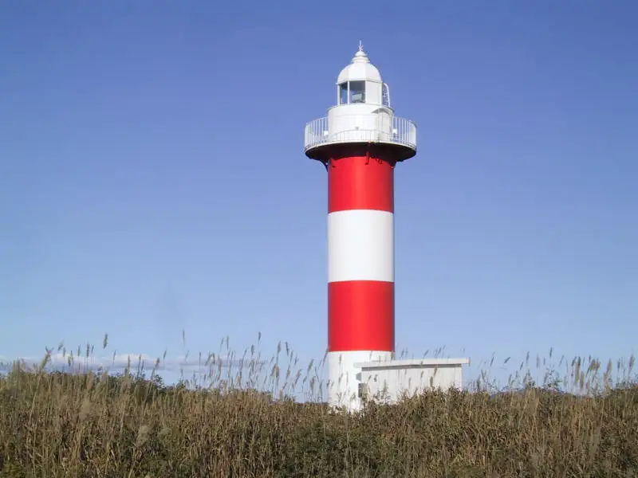
Stay
たびのホテル石狩
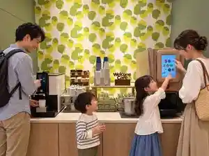
Tabino Hoteru Ishikari
天然温泉 花畔の湯 スーパーホテル石狩
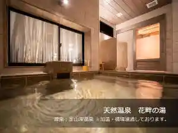
Tennen Onsen Hana Aze No Yu Suupaahoteru Ishikari
石狩天然温泉 番屋の湯
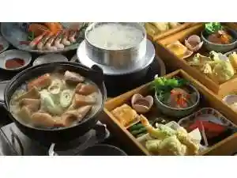
Ishikari Tennen Onsen Banya No Yu
古民家の宿 Solii
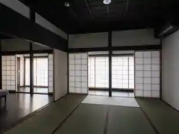
Ko Minka No Yado Solii
Cliff House Morai
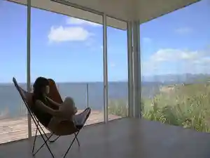
Cliff House Morai
Dining
いろはにほへと 花川店
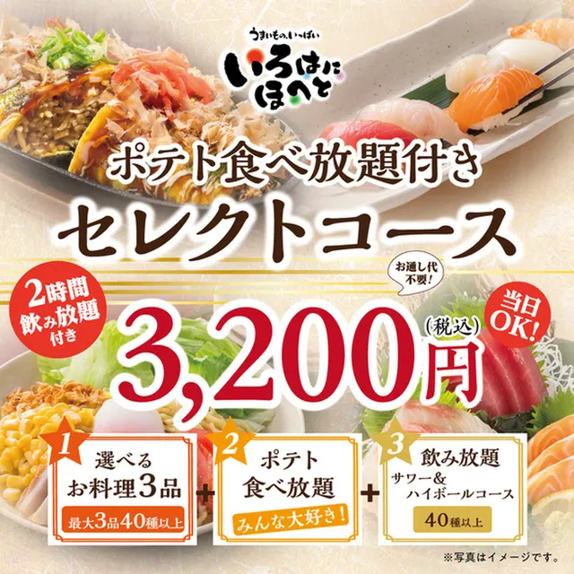
Irohanihoheto Hanakawa Mise
鮨爽醇鳥 ひだか
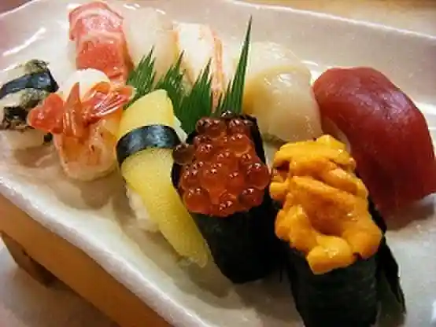
Sushi Sou Jun Tori Hidaka
寿司処食心
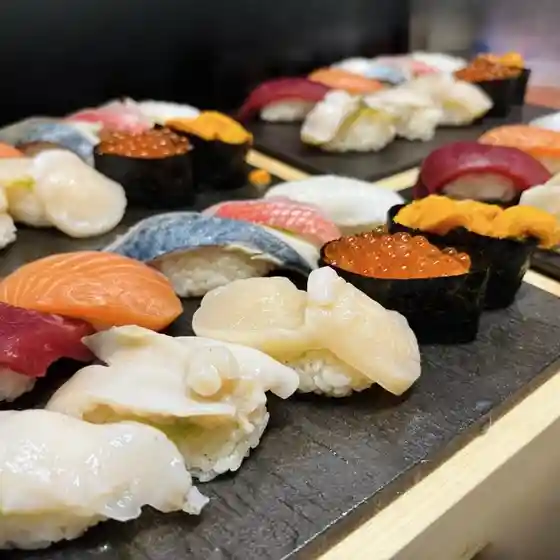
Sushi Tokoro Shoku Kokoro
焼肉とステーキの店 ノースヒル 茨戸ガーデン
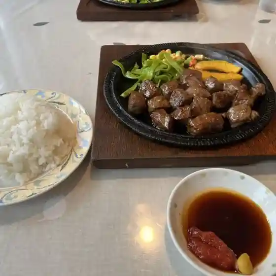
Yakiniku To Suteeki No Mise Noosuhiru Barato Gaaden
中華料理 漢華林 石狩店
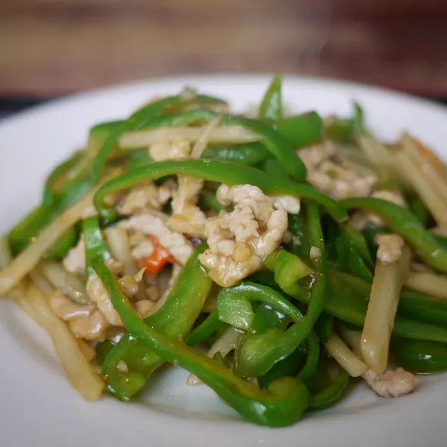
Chuukaryouri Kan Hana Hayashi Ishikari Mise
丸三
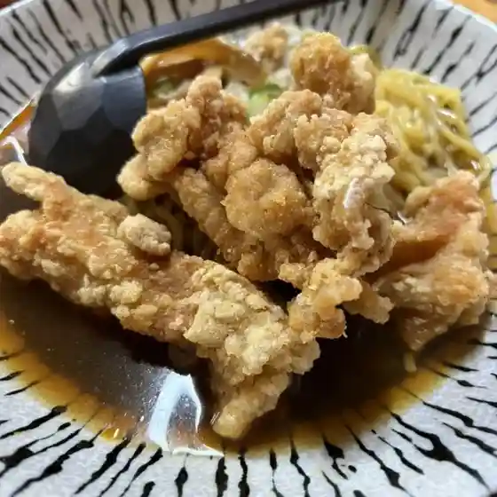
Marusan
居酒屋 まるちゃん

Izakaya Maruchan
OLA GA TOCHI CAFE
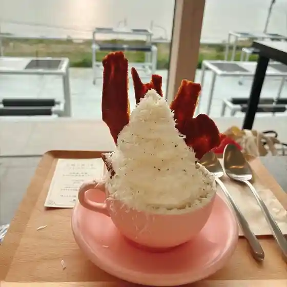
Ola Ga Tochi Cafe
伽羅珈琲舎
Kara Koohii Sha
お食事処 はまなす亭
O Shokuji Tokoro Hamanasu Tei
藤花
Fujika
洋風居酒屋 柳
Youfuu Izakaya Yanagi
石狩番屋の生鮮市場
Ishikari Banya No Seisen Shijou
カフェ アンジュール
Kafe Anjuuru
丹野商店
Tanno Shouten
ミスタードーナツ イオン石狩緑苑台ショップ
Misutaadoonatsu Ion Ishikari Midori En Dai Shoppu
閣鮨
Kaku Sushi
ミュージック＆パブ ダイアナ
Myuujikku & Pabu Daiana
キッチン 和
Kitchin Wa
活菜旬魚 さんかい 石狩花川店
Katsu Na Shungyo Sankai Ishikari Hanakawa Mise
デニッシュ
Denisshu
Cafe Bonds
Cafe Bonds
夕日の美術館
Yuuhi No Bijutsukan
ラーメンさんぱち 石狩花川店
Raamen Sanpachi Ishikari Hanakawa Mise